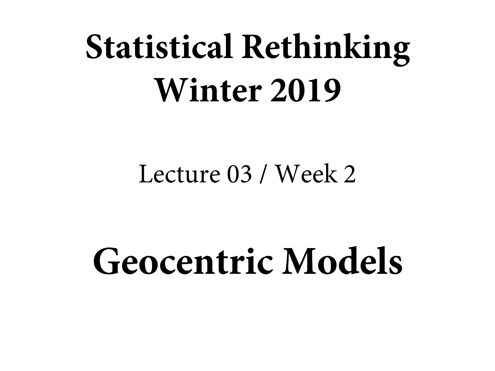
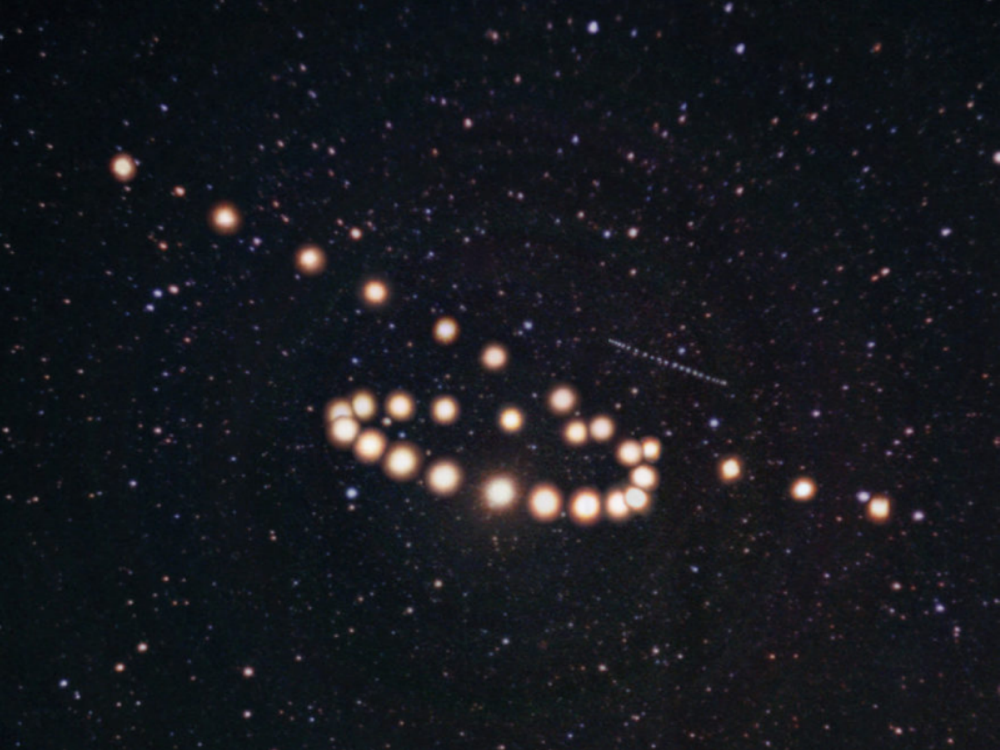
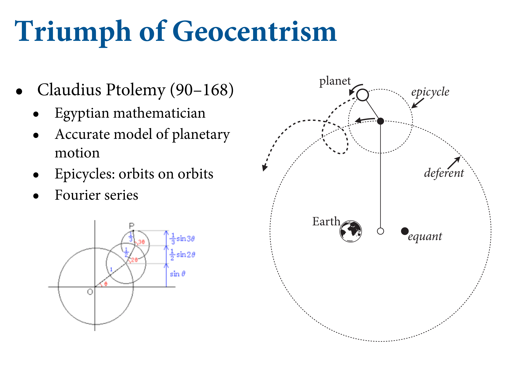
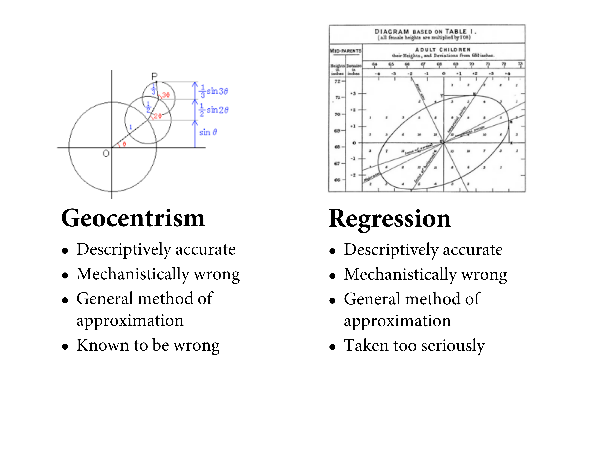
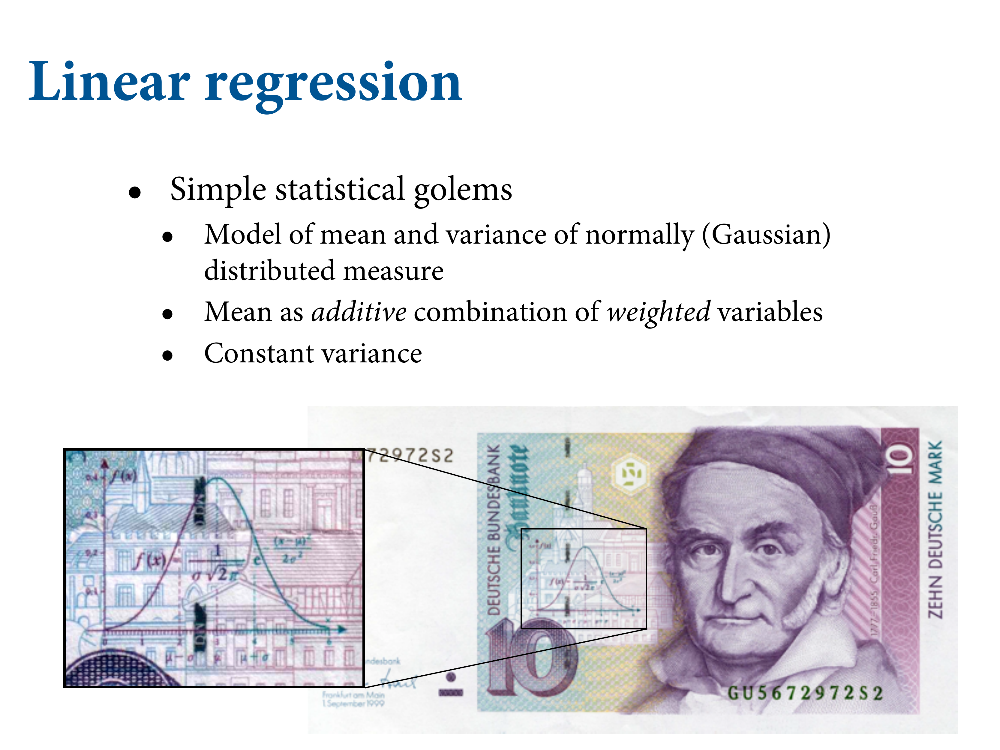
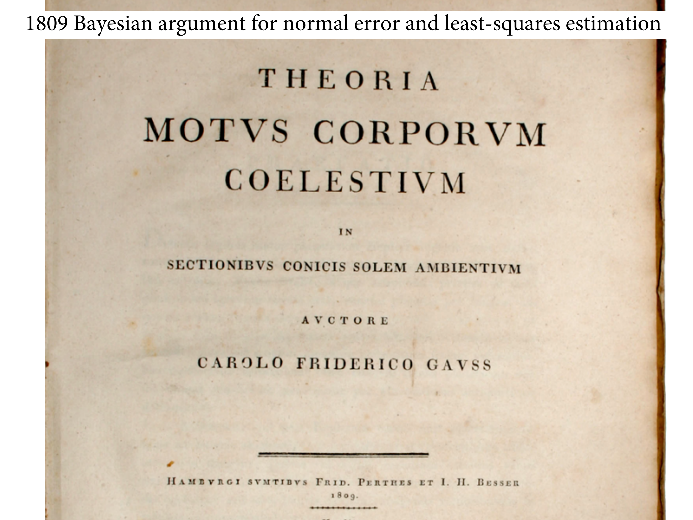

library(here)
source(here::here("code/scripts/source.R"))slides_dir = here::here("docs/slides/L03")
Introduction into regression models.
Figure 1.1: As scientists, we’re always dealing with questions that have higher dimensions and more complexity than what we can measure. Above is the path of Mars, called retrograde motion. It’s an illusion caused by the joint movement of ourselves and Mars. The relative velocities create the illusion.
Figure 1.2: A lot of people published models, but this one is very accurate. They’re full-blown mathematical models. But they’re also wrong. You can’t use them to send a probe to Mars. This is like a regression model. They’re incredibly accurate for specific purposes, but they’re also deeply wrong. Keep in mind the small world / large world distinction.
You could say scientists are geocentric people. The reason Ptolemy’s model works so well is that they used Fourier series - circles in circles (“epicircles”). You can use this for anything with periodic cycles. And this model still works.
Figure 1.3: We’re here to build models of many diverse things. We don’t usually use Fourier models; instead we tend to use regression. Linear regression models are incredibly useful. But if you use them without wisdom, all they do is describe things without wisdom.
Figure 1.4: Statistical golems which measure how the mean of some measure changes when you learn other things. The mean is always modeled as some additive weighted measure of variables.
Figure 1.5: Gauss developed regression, but he did it using a Bayesian argument. He used it to predict when a comet would return.
